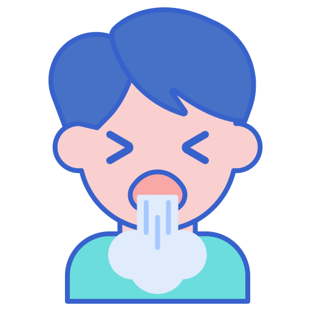

Symptoms of COVID-19
The most common symptoms of COVID-19 are fever, tiredness, and dry cough. Some patients may have aches and pains, nasal congestion, runny nose, sore throat or diarrhea. These symptoms are usually mild and begin gradually. Some people become infected but don’t develop any symptoms and don't feel unwell. Most people (about 80%) recover from the disease without needing special treatment. Around 1 out of every 6 people who gets COVID-19 becomes seriously ill and develops difficulty breathing. Older people, and those with underlying medical problems like high blood pressure, heart problems or diabetes, are more likely to develop serious illness. People with fever, cough and difficulty breathing should seek medical attention.


Protection measures for everyone
Stay aware of the latest information on the COVID-19 outbreak, available on the WHO website and through your national and local public health authority. Many countries around the world have seen cases of COVID-19 and several have seen outbreaks. Authorities in China and some other countries have succeeded in slowing or stopping their outbreaks. However, the situation is unpredictable so check regularly for the latest news.
You can reduce your chances of being infected or spreading COVID-19 by taking some simple precautions:
-
Regularly and thoroughly clean your hands with an alcohol-based hand rub or wash them with soap and water.
Why? Washing your hands with soap and water or using alcohol-based hand rub kills viruses that may be on your hands. -
Maintain at least 1 metre (3 feet) distance between yourself and anyone who is coughing or sneezing.
Why? When someone coughs or sneezes they spray small liquid droplets from their nose or mouth which may contain virus. If you are too close, you can breathe in the droplets, including the COVID-19 virus if the person coughing has the disease. -
Avoid touching eyes, nose and mouth. Why? Hands touch many surfaces and can pick up viruses. Once contaminated, hands can transfer the virus to your eyes, nose or mouth. From there, the virus can enter your body and can make you sick.
-
Make sure you, and the people around you, follow good respiratory hygiene. This means covering your mouth and nose with your bent elbow or tissue when you cough or sneeze. Then dispose of the used tissue immediately.
Why? Droplets spread virus. By following good respiratory hygiene you protect the people around you from viruses such as cold, flu and COVID-19. -
Stay home if you feel unwell. If you have a fever, cough and difficulty breathing, seek medical attention and call in advance. Follow the directions of your local health authority. Why? National and local authorities will have the most up to date information on the situation in your area. Calling in advance will allow your health care provider to quickly direct you to the right health facility. This will also protect you and help prevent spread of viruses and other infections.
-
Keep up to date on the latest COVID-19 hotspots (cities or local areas where COVID-19 is spreading widely). If possible, avoid traveling to places – especially if you are an older person or have diabetes, heart or lung disease.
Why? You have a higher chance of catching COVID-19 in one of these areas.